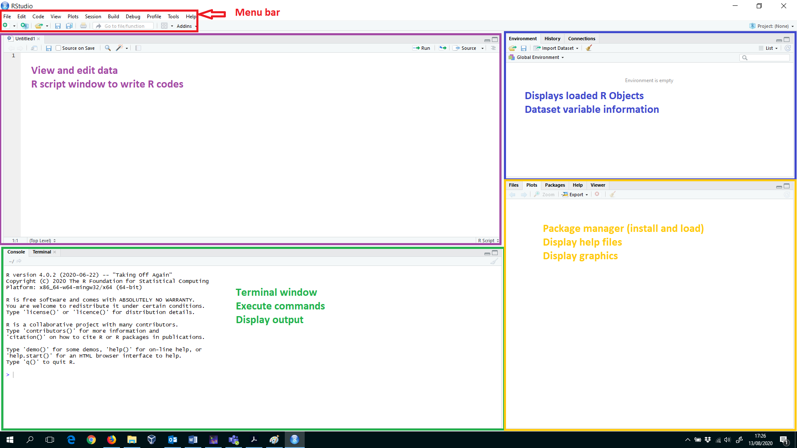

?getwd()1 Introduction to R
1.1 R, R Studio and Quarto
R is a very powerful statistical software that is becoming increasingly popular. Being able to do data analysis using R will very likely increase your employability.
Warning: R is not like other apps that you have used! It requires coding. You will need to practice regularly. There will be a lot of struggle, but the result is worth it.
We list below the apps that you will need to work with during the sessions. You may install these on your computers. Alternatively, you may use Coventry University’s Appsanywhere platform to get access. But you will find working with the app easier if it is locally installed.
We will be using R as the statistical analysis tool. For R documentations, support and download links, visit the R Project for Statistical Computing. R is freely available for Linux, MacOS and Windows. Please download the version that matches your computer’s operating system.
To facilitate your work with R, we highly recommend to download and install the integrated development environment (IDE) RStudio Desktop from posit. This platform will make it easier for you to write and run R code.
A final package that we highly recommend you to install is a publishing system, Quarto. You may use Quarto to produce documents in various formats (such as HTML, MS Word, PDF, PowerPoint, etc) while integrating your R code and output. You will easily have the option to change the format of your output as you desire. We will be using Quarto to produce documents in the third session of the series. Please visit Quarto for further information and download.
- Once you download Quarto, you will have access to it through RStudio.
RStudio has four main windows, that often have more than just one purpose. Figure 1.1 provides a brief description of each RStudio window. We will use all of them during the sessions, but the most important ones will be the console and the editor pane.

1.2 File Organisation
Create a folder for this workshop. This folder should include all material you download from shared OneDrive folder. Group files in sub-folders in a way that you can locate them easily. So for example,
Introduction-to-Rmay be the name of the folder and then you may have sub-folders such asdata,R-scripts, etc.If you are using the computers in the lab, it may be best if you create a folder on your OneDrive account as you can easily access this at home and on-campus.
Before working on the data, set your working directory. R will save all files in there and, if you want to open a dataset, R will also look in there first. Select the folder you have created for R workshops.
Use
setwd(the_address_you_would_like_to_locate_your_work)in the console to choose your work directory. You may alternatively do this through the menu:
Session –> Set Working Directory –> Choose Directory
You will see the console printing this action, which may help you to remember how to use the console next time.
- If you are unsure of in which folder your work is, type
getwd()in the console and R will print the current location you are at.
1.3 Getting Help
If you should ever struggle with some of R’s commands, a look into R’s help-files can be very helpful. To access the help file, you have to type into the console window ? and then the command name. For example, if you want to know more about the command getwd(), type the following: